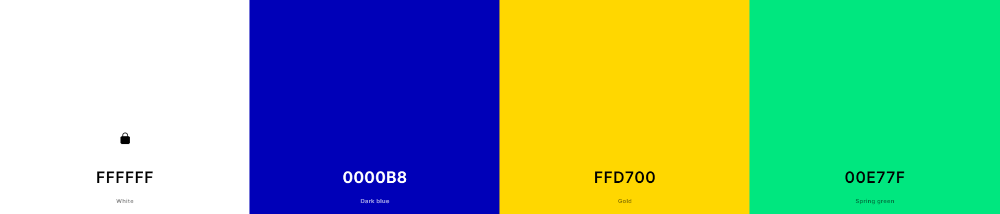

Guia de Estilo - Real Madird
Historia del club
Encontrasmos el color blanco ya que es el que mas erpresenta al club, junto al azul oscuro que es otro color referencia de la entidad. Tambien tenemos el color oro para darle detalles al aparatdo de trofeos y el verde para el aaratdo del estadio.
Los tonos de los colores se han escogido pra que resalten en el fondo blanco dando mas vida a la web, pero sin romper el estilo señorial del Real Madrid.
